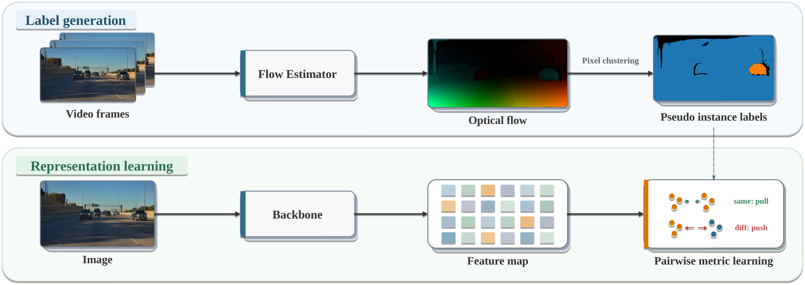
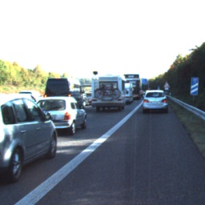
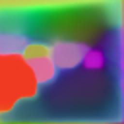
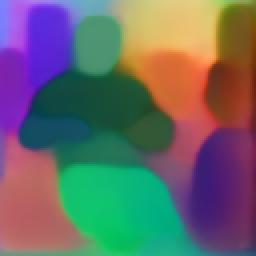
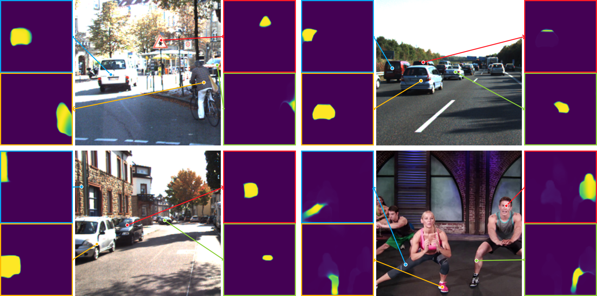

01
Monocular depth
KITTI Eigen · DCDepth · higher is better
δ1 ↑ · Ours 0.988 · DINOv3 0.986 · DINOv2 0.980 · SimMIM 0.979 · IN-22K 0.977
Learning object-centric visual representations from raw videos at scale.
Infants use common motion to perceive object unity before they can recognize objects from appearance alone. We turn that developmental cue into a scalable learning signal for machine perception.
Optical-flow boundaries become category-agnostic pseudo-instance masks. A pairwise metric-learning objective pulls pixels from the same object together and pushes different objects apart. Motion is needed only during pretraining; the resulting backbone consumes a single image.
Conservative motion labels first establish reliable object structure. A second cycle recovers useful supervision that incomplete flow boundaries leave behind.

Cycle 1 · high precision
Optical flow and pixel clustering produce pseudo-instance labels. The labels organize dense features around object unity and instance separation through pairwise metric learning.
Compare PCA feature maps from common appearance-based pretraining objectives with our motion-derived representation.




A matched view of the latest paper results across dense geometry, instance-sensitive perception, and closed-loop-relevant planning.
KITTI Eigen · DCDepth · higher is better
δ1 ↑ · Ours 0.988 · DINOv3 0.986 · DINOv2 0.980 · SimMIM 0.979 · IN-22K 0.977
nuScenes · BEVFormer V2 · 1600 × 900
NDS ↑ · Ours 55.89 · SimMIM 54.98 · IN-22K 54.59
nuScenes · SparseOcc
RayIoU ↑ · Ours 40.04 · DINOv3 41.02 · DINOv2 39.00 · SimMIM 38.60 · IN-22K 37.60
NAVSIMv2 · DriveSuprim
EPDMS ↑ · DA-ViT-L 90.5 · DINOv3-L 89.0 · Ours 88.9 · DINOv2-L 87.2
Task-local scales emphasize within-task differences; exact values are labeled and bar heights are not comparable across tasks.
NeurIPS 2025 · Volume 38 · pp. 169422–169444
@inproceedings{liang2025object,
title = {Object Concepts Emerge from Motion},
author = {Liang, Haoqian and Wang, Xiaohui and Li, Zhichao and Yang, Ya and Wang, Naiyan},
booktitle = {Advances in Neural Information Processing Systems},
volume = {38},
pages = {169422--169444},
year = {2025},
doi = {10.52202/085713-5103}
}